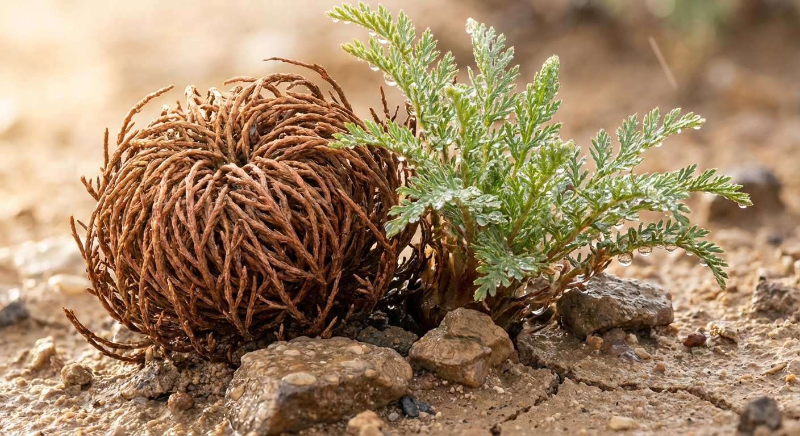

植物
种子、卷柏、沙漠植物、会以结构保护自己的生命体。

最迷人的不是“重新展开”，而是卷起来那一刻——像把身体折成一个小小的避难所。
不是做成百科全书，也不是做成散文站。更像一座 field archive：图鉴、观察、机制、和那些一下子不会忘掉的自然形状。
不是时间线，也不是博客分类。更像观察柜上的抽屉标签：植物、海洋、鸟类、奇异生存机制，各自慢慢长出来。
种子、卷柏、沙漠植物、会以结构保护自己的生命体。
深海生物、拟态章鱼、吸血乌贼，以及那些看起来像来自别的世界的形态。
迁徙、集群、叫声、羽毛和飞行路径，偏向那些一眼就让人想停下来看的种类。
拟态、脱水耐受、群体行为、极端环境适应。比起结论，更想记录这些机制本身的形状。
每个条目不再是一篇文章，而是一张被整理过的 specimen card：图、名字、分类、核心观察、以及一条真正值得留下来的注解。
卷柏最抓人的地方不是“复活”，而是会在真正危险来之前，先把自己卷进一个保护结构里。它看起来像奇迹，但本质上是一种非常老练的自我保护。
与其说它可怕，不如说它把“深海”这个词本身的气氛长成了身体。
一群鸟飞起来时，真正迷人的不只是单只个体，而是它们怎样共同形成一块会移动的秩序。
这里不是先下定义，而是先留下观察。很多时候，一个项目真正的起点不是知识已经完整，而是某个东西先让人停下来。
先记住它的轮廓、动作、保护方式，再去记名称和分类。这样这个自然条目才不会只是一个信息盒子。
柜子比书轻，也比文章更适合长期积累。每个条目先被放进去，之后再慢慢长成更完整的图鉴页。
下一步不是堆内容，而是建立真正的条目模板、分类系统和观察标记，让这个 archive 可以一直长。